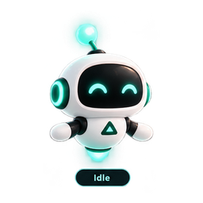
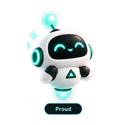
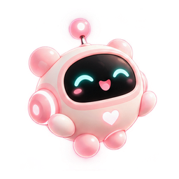
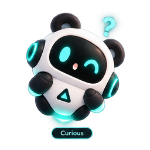
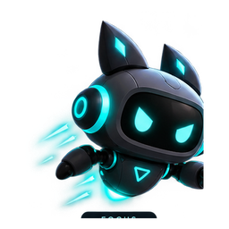
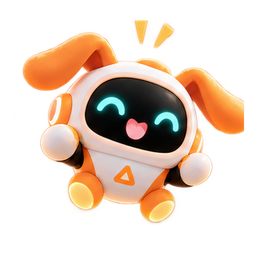

Focus can have a personality.
Your bot is a quiet companion—not a punishment system. It reflects habit context, active experiments and supported digital-friction signals with rate-limited reactions.

Choose a bot. Change its mood.
The same shared personality engine can animate every skin across Android and Windows.
Reduced Motion can keep expressions and messages while suppressing movement effects.
Five characters. One behavior engine.
Atlas Mini remains free. Paid bot pricing is supplied by the app store and each paid bot is a separate permanent one-time product.

Atlas Mini
Clear, calm and practical.
Free · Default
Mochi Bot
Soft, cheerful and cozy.
Separate purchase
Pixel Panda
Playful curiosity, low drama.
Separate purchase
Neon Scout
Sharp cyber focus energy.
Separate purchase
Orbit Pup
Friendly space-pup companion.
Separate purchaseAndroid floating overlay
Optional draggable bot over other apps, edge snap, saved position, compact live context and explicit overlay permission.
Windows mini companion
Always-on-top mini window with habit progress, active experiment context and the selected bot skin. Windows does not fabricate Android usage telemetry.
Your companion, your choice.
Use Atlas Mini forever for free or collect additional bot personalities as separate one-time purchases.